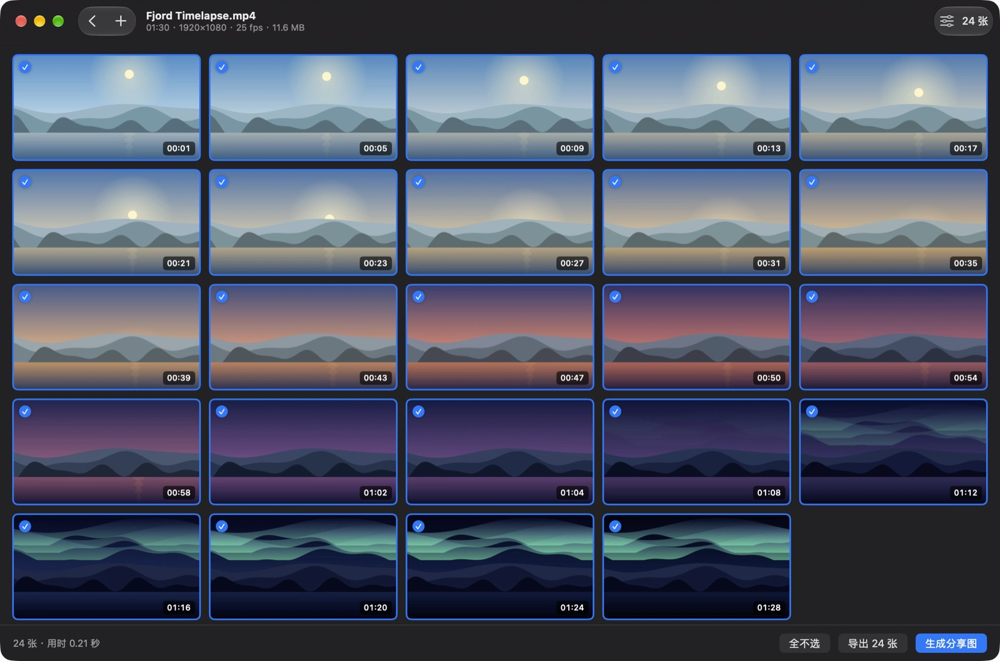

Kvikkshot
想要的每一帧，一眨眼就好。
视频一拖进来，截图就已经好了。留下想要的，导出，或者拼成一张图来分享。Kvikk 在挪威语里是“快”。
平台macOS 14，Apple 芯片和 Intel
价格免费
网络完全不联网
语言EN, 简体, 繁體

它能做什么
- 按间隔或按数量每隔几秒一张，或在整段视频里平均取指定数量。
- 快速或精确关键帧模式几秒钟就能扫完一小时的 4K 视频；精确模式准确到每一帧。
- 一次多个视频批量拖入，导出时每个视频各有自己的文件夹。
- 分享图把截图拼成一张图，可选列数、浅色或深色，带时间和视频信息。
- 用完不留痕迹返回首页、退出时和下次启动时，都会删除缓存的截图。
获取 Kvikkshot
已由 Apple 签名并公证。打开磁盘映像，把 Kvikkshot 拖到“应用程序”文件夹即可。Mac App Store 版也即将推出。